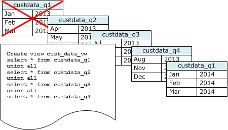

시계열 테이블 사용
롤링 기간 동안 데이터를 유지하는 경우, 다음 다이어그램에 나온 것처럼 시계열 테이블을 사용하십시오.

데이터 세트를 추가할 때마다 새 테이블을 만든 다음 시계열에서 가장 오래된 테이블을 삭제합니다. 두 가지 장점이 있습니다.
-
DROP TABLE 작업이 대량 DELETE보다 훨씬 효율적이기 때문에 행 삭제에 따른 비용 추가를 피할 수 있습니다.
-
테이블이 타임스탬프를 기준으로 정렬되면 vacuum이 필요 없습니다. 각 테이블에 한 달 동안의 데이터가 포함된 경우, 테이블이 타임스탬프를 기준으로 정렬되어 있지 않더라도 vacuum이 다시 써야 하는 데이터 양은 한 달치에 불과합니다.
데이터가 여러 테이블에 저장되어 있다는 사실을 감추는, 보고 쿼리가 사용할 UNION ALL 뷰를 생성할 수 있습니다. 쿼리가 정렬 키에서 필터를 적용하는 경우, 쿼리 플래너는 사용되지 않는 모든 테이블을 효율적으로 건너뜁니다. 다른 유형의 쿼리에는 UNION ALL이 비효율적일 수 있으므로 테이블을 사용하는 모든 쿼리의 컨텍스트에서 쿼리 성능을 평가해야 합니다.